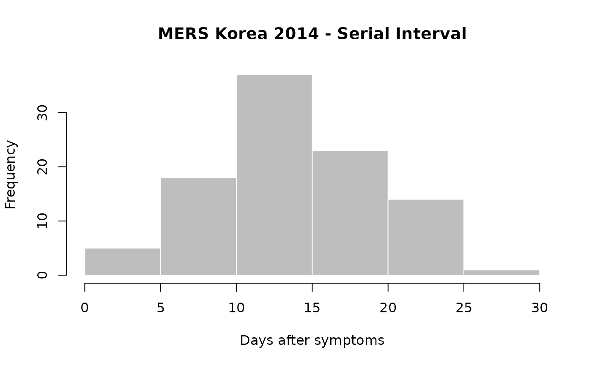

This function extract attributes of cases involved in contacts using case
information provided in the linelist of an epicontacts
dataset. If not provided, the function used to process attributes will adjust
to the type of attribute selected (see details).
get_pairwise(x, attribute, f = NULL, hard_NA = TRUE)
| x | an |
|---|---|
| attribute | the attribute to be examined between contact pairs |
| f | a function processing the attributes of 'from' and 'to' |
| hard_NA | a logical indicating if the output should be NA whenever one of the paired values is NA (TRUE, default); otherwise, 'NA' may be treated as another character (e.g. when pasting paired values) |
Thibaut Jombart (thibautjombart@gmail.com) Tom Crellen (tomcrellen@gmail.com)
if (require(outbreaks)) { ## example using MERS outbreak in Korea, 2014 head(mers_korea_2015[[1]]) head(mers_korea_2015[[2]]) x <- make_epicontacts(linelist=mers_korea_2015[[1]], contacts=mers_korea_2015[[2]], directed=TRUE) ## estimate serial interval (onset->onset) SI <- get_pairwise(x, "dt_onset") SI summary(SI) hist(SI, col="grey", border="white", xlab="Days after symptoms", main="MERS Korea 2014 - Serial Interval") ## check gender mixing: get_pairwise(x, "sex") # not good, we want 2-way table get_pairwise(x, "sex", f=table) # use custom function fisher.test(get_pairwise(x, "sex", f=table)) # test association }  #> #> Fisher's Exact Test for Count Data #> #> data: get_pairwise(x, "sex", f = table) #> p-value = 1 #> alternative hypothesis: true odds ratio is not equal to 1 #> 95 percent confidence interval: #> 0.06158088 5.26628732 #> sample estimates: #> odds ratio #> 0.712926 #>